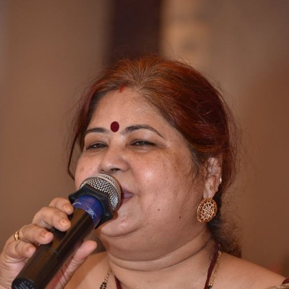
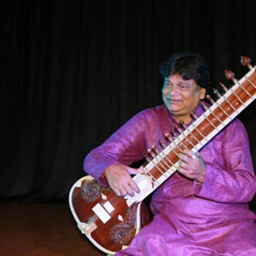
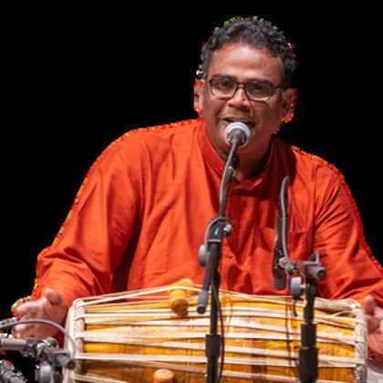
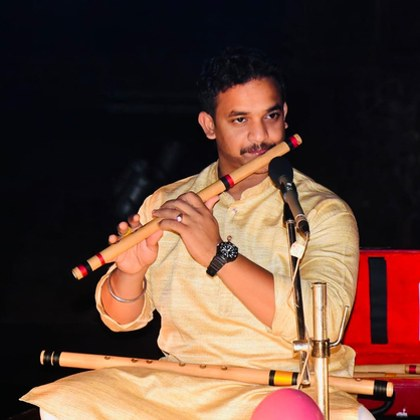
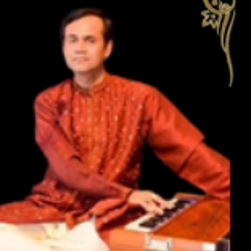
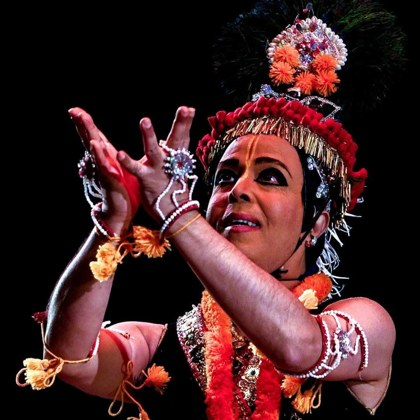

An intimate evening of Indian classical music with the visiting maestros
Every year, the iGurukul Foundation family gathers for one unhurried evening of live Indian classical music — sitar, mardala, bansuri, and voices that have graced the great stages of Odisha and All India Radio — here in our own center in Fremont.
This evening is also our annual fundraiser in support of the visiting musicians from India whose artistry makes our dance productions, festivals, and gatherings possible. Your generosity directly supports their travel, stay, and honorarium — and keeps this rare, living tradition of guru-shishya music thriving in the Bay Area. Come for the music; stay for the satsang, the chai, and the company.
The very orchestra that created a mini-Odisha at this summer's Ranga Puja celebrations — master musicians who have traveled from India to be with us.

Vocals
One of Odisha's most celebrated voices — Sangeet Natak Akademi Awardee for Odissi Music, A-grade artist of All India Radio & Doordarshan, dual PhD, and former chief executive of the GKCM Odissi Research Centre.

Sitar
Renowned sitar virtuoso and Sitar Guru at the GKCM Odissi Research Centre, Bhubaneswar. He has composed music for many eminent Odissi dancers, TV serials and festivals across India.

Mardala
Master of the mardala with a Master's in music from Utkal University; former Mardala teacher at the famed Nrityagram dance village. Honored with the "Talamani" award (Sur-Singar Samsad, Mumbai) and the Best Mrudangist Award.

Flute
Hindustani classical flautist and national award recipient; B-High artist with All India Radio & Doordarshan. One of Odisha's leading young flute voices.

Vocals & Harmonium
Noted Hindustani vocalist (Sangeet Visharad, Pracheen Kala Kendra) and All India Radio artist. An accomplished harmonium accompanist and composer across devotional, Sufi, ghazal and folk traditions.

Cymbals & Manipuri Dance
Two-time President's Awardee and founder of Movements in Motion (California), with performances in a dozen-plus countries — joining the maestros in rhythm and movement.
There is no ticket — this evening runs on gratitude. Choose a suggested donation below, or give any amount that feels right. Every dollar goes toward our visiting artists' travel, stay, and honorarium.
Send to igurukulfoundation@gmail.com
Memo: "Musical Night"
Payable to iGurukulFoundation — drop it in the donation box at the event.
A donation box will be available at the entrance throughout the evening.
iGurukul Foundation is a 501(c)(3) nonprofit — donations are tax-deductible to the extent allowed by law. Please keep your receipt; for donation acknowledgement letters, write to igurukulfoundation@gmail.com.
5500 Stewart Avenue, Fremont, CA 94538
Sunday, August 9, 2026 · 5:00 – 8:00 PM
An intimate, family-friendly gathering — light refreshments will be served. Seating is informal, baithak-style; arrive a few minutes early to settle in before the first raga.